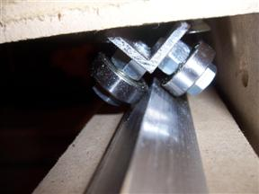
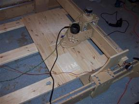

The CNC Milling Machine
Started 4/15/2008
I been somewhat fascinated by the idea of a CNC milling machine and
it's
ability to recreate all the pieces that make up the machine. I saw this
video
showing how quick and easy it was to build a CNC machine and decide to
investigate further. I found out a couple of my coworkers were also
interested in CNC machines. I started milling around CNCZone and looked
into a Joe's
CNC but a finally I decided to order
a kit
from Buildyourcnc
and build one that way. I pre-ordered the expandable 4x8 foot while it
was still in design. It took a while to arrive and I had originally
planned this to be my first project but it ultimately ended up being
the second.
It's made with basic hardware store parts. Skate bearing, bolts,
screws, pre-cut MDF, aluminum, etc. This is the z-axis with the bearing
truck for the y-axis visible. A standard router fits in the base.
Here I have attached it to the y-axis and attached a stepper motor. All
the electronic I used are salvaged parts again.
Here are all three axises. Unfortunately the 6 foot x-axis lead screw I
had is not long enough to work with the machine in its fully expanded
size.
Here is another shot.

You can see how the bearing truck ride on the rails for smooth axis
motion.
The fully expanded size of the machine. However the x-axis sides are
wobbly at this size.
Here is the computer system on the workbench used to control the
machine. I was able to salvage a small touch panel display,
motherboard, hard drive, motors, motor driver and power supply. I did
need to purchase a simple parallel port breakout board
from CNC4PC.
I didn't require a fully optically isolated adapter because the motor
drivers I had were already isolated. I wired up the three motors to the
power supply and the drivers.
Because of the wobbly x-axis and I could not locate any 9 foot lead
screws without ordering
them special I decided to reduce the machine down a bit. It was also
a bit too
large for the space I had available for it anyways. I ended up with a
machine that can mill 4x5 foot pieces. You can also see my first cut
here. You can also see where I mounted the router in the base.

I built a basic support table for the machine using straight 2x8 boards
and a 2x4 foot 1/2 flat glued board. I can screw my work down to it. I
used Mach3
to create the
g-code path based on the font and my name. Eventually I need to wire up
home sensors and mount the PC somewhere and make it into a regular
table but it will work well to use on my next project.
Here is my first attempt at making an actual part with the machine. I
used VCarve to generate the G-Code instructions for the CNC Milling
machine after measuring one of the motor mounts on the CNC machine.
This
is the way the machine can make itself. This experience will come in
handy when I need to create all the parts for the pinball machine. I
created four small tabs to hold the part in place but I had to hand saw
and sand them afterwards.
back